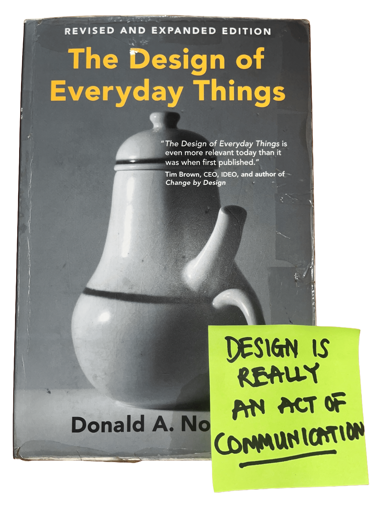
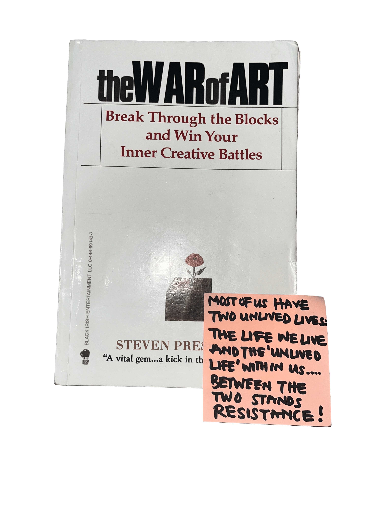
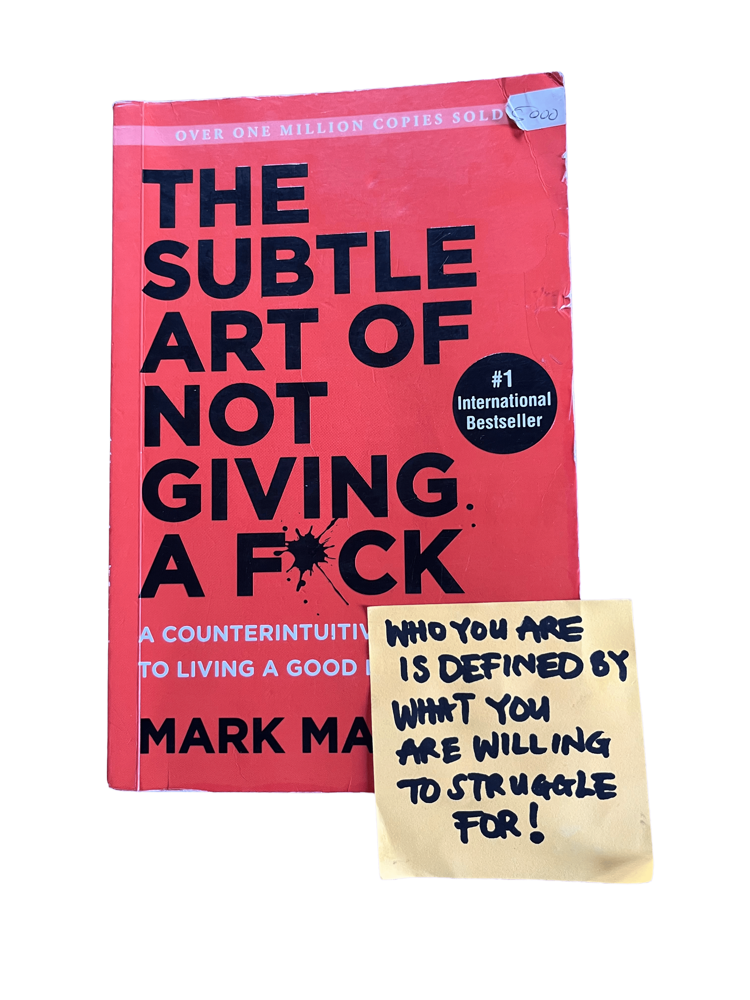

"For a Habit to be improved, it must be first Established"
-James Clear
“A reader lives a thousand lives before he dies. The man who never reads lives only one.”
“You will learn most things by looking, but reading gives understanding. Reading will make you free.”
“Reading is an exercise in empathy; an exercise in walking in someone else’s shoes for a while.”
“The whole world opened to me when I learned to read.”
The Best Books I've Read
-
Must Read
Atomic Habits
Habits form the absolute cornerstone of success or failure. Quite literally, YOU BECOME, IN PART WHAT YOU REPEATEDLY PRACTICE. Clear provides a practical framework for understanding why habits form and how small, consistent changes can compound into remarkable results over time. He makes applying these practical principles effortless. He introduces the four essential stages of habit formation—cue, craving, response, and reward. He shows how each stage can be deliberately designed to build good habits and dismantle bad ones. From making desired behaviors obvious, attractive, easy, and satisfying to doing the opposite with unwanted behaviors, He distinguishes between the routines we perform automatically and the intentional systems we consciously adopt to drive long-term growth. Ultimately, you do not rise to the level of your goals—you fall to the level of your systems. Best for: Anyone looking to break bad patterns and build intentional daily systems that drive long-term personal growth.
-
Favorite
The Psychology of Money
"People do some crazy things with money. But no one is crazy. People from different generations, raised by different parents who earned different incomes and held different values, in different parts of the world, born into different economies, experiencing different job markets with different incentives and different degrees of luck, learn very different lessons. Everyone has their own unique experience with how the world works. What you’ve experienced is more compelling than what you learn second-hand. So all of us go through life anchored to a set of views about how money works that vary wildly from person to person. What seems crazy to you might make sense to me. Morgan Housel not only uses 19 interesting stories and examples of people and their relationships with money to these illustrate and justify these points. He also shares the habits and principles he has learnt over the years on how to manage money effectively. I honestly really enjoyed this one. 9.5/10 for me
-
Favorite
Steal Like an Artist
True creativity isn't about making something out of nothing, but about learning from and building upon the works of others that inspire you. Austin Kleon emphasizes that no work is entirely original, so the best way to start creating is by gathering inspiration from what you admire without plagiarizing. Austin Kleon gives 10 Rules for Creativity: Collect ideas and keep a scrapbook of things you love. Don’t wait to figure yourself out before creating—start making things and learn as you go. Create the work you wish existed, use your hands instead of always staying on a screen, and make time for hobbies and side projects because they can bring fresh ideas into your main work. Most importantly, share what you make and use the freedom of being unknown to experiment. One particularly helpful practice introduced to me by Kleon is having two work stations: one analog and the other digital. He highlights the dual-workstation model to separate unfiltered analog ideation from digital execution.
-
Favorite
The Alchemist
Santiago is a young shepherd from Spain, who upon deciding that although his life is comfortable and secure as it is decides to leave the, a safe and unremarkable path, and follow his dreams and go out into the unknown, in search of his 'personal legend' which to me represents (metaphorically) a person's true purpose — the thing they were put on earth to do, as opposed to the life other people or society expect of them. He embarks on a journey to find treasure in the Egyptian pyramids. This book reminded me of the teachings stoic philosophy in that Fear of failure, comfort, and even love are framed as things that can pull a person away from their path — suggesting the Personal Legend is less about one dramatic goal and more about a daily discipline of choosing growth over safety. This book to me is a metaphor for that begs the question, what would you choose? Self-actualization or conformity? Beautiful book on following your dreams, trusting the universe and finding your personal legend.
-

Must ReadThe Design of Everyday Things
Bad design causes user frustration, not user stupidity. 3 Core ideas from this book for both designers and non-designers; Struggling with a push door that looks like a pull door means the designer failed, not your brain. Products must match how humans actually think, see, and move—instead of forcing humans to act like machines. And Good design is invisible because it works naturally; bad design screams through frustration and confusion. He also talks about Why Errors Happen and how to solve them; Blame the system, not the human: When people make mistakes with a microwave or hospital monitor, bad layout or missing feedback caused it. Making errors undoable: Good systems let you reverse mistakes easily or block dangerous choices before they happen
-
Must Read
Rich Dad Poor Dad
This book is my go-to recommendation for anyone seeking a solid foundation in financial literacy and wanting to truly take control of their finances. By contrasting lessons from his own father (poor dad) and his best friend’s father (rich dad), Robert Kiyosaki illustrates the fundamental mechanics of how money works. Kiyosaki's core rule: Asset: Anything that puts money into your pocket (e.g., rental properties, dividend stocks, businesses, royalties). Liability: Anything that takes money out of your pocket (e.g., car loans, credit card debt, subscriptions).
-
Must Read
The 22 Immutable Laws of Marketing
“It’s better to be first in the mind of the prospect, than to be first in the market.” — Law #2, The Law of the Mind. “Marketing is a battle of perception, not a battle of products.” — Law #4, The Law of Perception “The most powerful concept in marketing is owning a word in the prospect’s mind.” — Law #5, The Law of Focus. Just to bring up a few of the gems in this book: marketing is the heart of any business or enterprise. Even if you are not in the field of marketing, understanding the concepts and techniques used in marketing and how they apply to your organisation/enterprise is super helpful. Even just understanding how various enterprises use the power of marketing to open up your wallet is extremely eye-opening. Ries and Trout use real-world examples of successful and unsuccessful marketing tactics from both popular and unpopular companies, and give their own advice based on 40 years of experience to identify what works and what doesn’t I’ve found some of the laws to be particularly helpful in my personal life, such as the Law of Category, Law of Line Extension, Law of Opposite, Law of Perspective, Law of Sacrifice, and Law of Failure. There are definitely more gems in the book, but these were some of the ideas that stood out to me the most. Like i said, hether you market or not, learn to understand the driving forces behind the most powerful brands and how they influence you to buy from them.
-
Read
Think and Grow Rich
This book was my entry into the “if you think it and believe it, you can achieve it” genre. Napoleon brings his long-since-debated opinion that all achievement originates from mere thoughts. Despite his controversies and sceptics, I like to remove the “person” from the “product” when assessing products. Some of the ideas and examples feel dated, which is understandable given when the book was written, but it doesn't stop some of the core principles from being relevant today. A good amount of chapters in this book resonated with me, like Desire, the starting point of all achievement; Faith, as a state of mind; Specialized Knowledge; and Organized Planning. But, conversely, there were some questionable chapters for me, such as the chapters on Autosuggestion, the Sixth Sense, the 13th chapter on the Brain, and, to an extent, some claims on how “sex transmutation” works in Chapter 11. That being said, if you feel truly aligned or have some ideal vision of what you must accomplish or have in life, this book offers motivation, backed, to some extent, by psychological ideas. But if you need a detailed manual on what steps to take to reach your goals, this isn’t it. I wouldn’t call this book a must-read, but neither would I call it a “skip.” It’s a good read, for the most part..
-
Read
This Is Marketing
You don't have to be a marketer to read this one. “Marketing is an act of service.” If you are interested in building a community, setting up an email list, creating a worthwhile brand, or even creating a YouTube channel, this book is for you. He teaches the power of effective, trustworthy marketing by focusing on trust, reliability, consistency, creating value, and building relationships rather than manipulation. He emphasizes empathy over manipulation—you should seek to understand the fears, dreams, and worldview of the people you seek to serve. He also outlines the 5 Steps of Modern Marketing: invent something worthwhile that solves a real problem, design and build it so a specific group of people benefits, tell a story that matches the dreams of that tiny market, spread the word in a way that is easy to share, and show up consistently and generously over time to lead your tribe. The most important lesson I learnt from this book was how to find your specific “tribe”: instead of trying to reach everyone, focus on the “smallest viable market”—a tiny group of people who care deeply about your work.

ReviewedWar of Art
The War of Art is a book about the internal struggle that every creative person faces: resistance. Pressfield personifies resistance as a force that prevents us from doing our work, whether it's writing, painting, or starting a business. He argues that resistance is the enemy of creativity and that we must learn to overcome it in order to achieve our goals. The book is divided into three sections: Resistance, Combating Resistance, and Beyond Resistance. In the first section, Pressfield describes the various forms of resistance that we encounter, such as procrastination, self-doubt, and fear. In the second section, he offers strategies for overcoming resistance, such as establishing a routine, seeking support from others, and embracing failure as a learning opportunity. In the final section, he explores the idea of "turning pro," which means committing fully to our creative work and treating it as a profession rather than a hobby. Overall, The War of Art is a motivational and practical guide for anyone who wants to pursue their creative passions and overcome the obstacles that stand in their way.
ReviewedRead People Like a Book
Lying is hard work for the brain—it creates cognitive overload. This book isn't a "how to detect a liar" manual, but it gives you the tools to read people and understand their behavior through body language, microexpressions, and other nonverbal cues. Patrick King’s Read People Like a Book is basically a field guide to decoding human behavior without needing a psychology degree. Before you try to guess if someone is lying or stressed, you have to know how they act when they're totally relaxed—that’s their baseline. King highlights that physical movement usually leaks what someone is actually feeling, especially when their words say otherwise. He also introduces personality frameworks, including the Big Five (OCEAN), and motivation drives such as seeking pleasure or avoiding pain. Overall, my main takeaway is to watch out for our own biases, especially confirmation bias and projection. To read people cleanly, you have to separate what you actually observe from what you're assuming.
Must ReadThe Richest Man in Babylon
Timeless principles and the most basic yet powerful lessons on money and wealth. This boom is a gem. Alongide rich dad poor dad, for me this is one of the two essential books i recommend to people interested in the subject of financial literacy to read. From saving to investing, to understanding leverage and compounding, this book is essential if you want to understand the principles of money and wealth from first principles. George Clason uses stories from the ancient city of Babylon to teach these timeless lessons, which makes them fairly easy to understand and apply.

FavoriteSubtle Art of Not Giving a F*ck
Here are the core ideas from the book: Take total responsibility: You are always responsible for your reactions and choices, even when a situation is not your fault. Choose your struggles: Meaning in life is defined by what you are willing to suffer for; pick battles that align with your deepest values. “Who you are is defined by what you are willing to struggle for.” Happiness comes from solving problems: Avoidance leads to unhappiness, while tackling challenges head-on creates fulfillment. The “Backwards Law”: Chasing constant positive experiences creates anxiety and dissatisfaction, whereas accepting negative experiences builds real strength and well-being. Embrace failure: Uncertainty and failure are essential stepping stones for growth and self-correction. You are not special: Rejecting the cultural obsession with exceptionalism frees you from the pressure of feeling inadequate just for being average. Care less, live more: Save your limited emotional energy (“fucks”) for immediate, important things like family, true friends, and personal values rather than superficial distractions. Death is the ultimate metric: Remembering that life is finite helps clarify what truly deserves your attention. Basically, in life you have limited amounts of time and energy, so you have to be very selective of what you give your energy and attention to. "
ReviewedI Dared to Call Him Father
Late Mrs Sheikh recounts her journey from a Muslim background to Christianity, describing the questions, experiences, and personal struggles that gradually changed her understanding of God. It's a deeply personal story about faith, but also about the courage to question what you've always known and follow a path that might change your life. What I appreciated most about this book is its honesty about the personal cost of conviction. Sheikh's story reminded me that faith isn't always a straightforward journey; sometimes, it asks us to confront difficult questions and step into uncertainty. You don't have to share her beliefs to appreciate the vulnerability it takes to reconsider something so fundamental to your identity. While some of her experiences are deeply rooted in her Christian faith, the broader themes of seeking truth, finding purpose, and having the courage to change are universal. It's a thoughtful, personal read that leaves you reflecting on what you believe, why you believe it, and what you're willing to risk for it.
Latest Video Review
Watch deep-dive breakdowns from my YouTube channel (@hiimrandycreates), or click any book on the shelf to cue up its review and key takeaways.